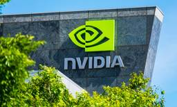

PYMNTS |
https://www.pymnts.com/
The latest global news and analysis in payments, retail, fintech, financial services and the digital economy.
フィード
The Tooth Fairy Approves a 17% Raise
PYMNTS |
The tooth fairy has approved a 17% pay increase, which is excellent news for anyone whose compensation package includes loose incisors. There was no performance review, no awkward conversation with a manager and no requirement to return to the office. The recipient simply went to bed. Somewhere, an adult is reconsidering their career choices. The […]The post The Tooth Fairy Approves a 17% Raise appeared first on PYMNTS.com.
8時間前
Apple Enables One-Tap Gift Card Redemption in Upcoming iOS Update
PYMNTS |
Apple’s upcoming mobile operating system, iOS 27, will enable users to redeem Apple gift cards by tapping them on a compatible iPhone, MacRumors reported Wednesday (Sept. 9). The iPhone will scan a security chip in Apple’s gift cards to verify that the card is authentic and unspent in an attempt to reduce scams, the report […]The post Apple Enables One-Tap Gift Card Redemption in Upcoming iOS Update appeared first on PYMNTS.com.
16時間前
AI Startup Cohere Targets $20 Billion Valuation in Funding Round
PYMNTS |
Artificial intelligence startup Cohere is in advanced talks to raise between $2 billion and $3 billion at a valuation of $20 billion, The Globe and Mail reported Friday (Sept. 11). The deal could close as soon as next week, although it has not been finalized, and the terms could change, according to the report. If […]The post AI Startup Cohere Targets $20 Billion Valuation in Funding Round appeared first on PYMNTS.com.
17時間前
Rent the Runway Names Nordstrom Veteran Paige Thomas CEO
PYMNTS |
Rent the Runway appointed its chief commercial officer and Nordstrom veteran, Paige Thomas, as CEO, president and member of the board of directors, the company said in a Friday (Sept. 11) press release. Thomas joined the company as CCO in June. Before that, she served as chief merchant and product innovation officer at Signet Jewelers, […]The post Rent the Runway Names Nordstrom Veteran Paige Thomas CEO appeared first on PYMNTS.com.
17時間前

FinTechs Follow Corporate Clients Into Bigger Financial Relationships
PYMNTS |
FinTechs are finding more growth in large corporate relationships, whether by winning larger customers or handling more of the financial activity of companies they already serve. Revolut, for example, is targeting FTSE 250 businesses as it seeks a larger role in corporate banking, where its penetration has trailed its business among smaller companies, the Financial […]The post FinTechs Follow Corporate Clients Into Bigger Financial Relationships appeared first on PYMNTS.com.
19時間前
Federal Agencies Overhaul Bank Partner Rules to Drive Innovation
PYMNTS |
Four federal agencies are seeking comment on proposed guidance to help financial institutions manage risk associated with third-party relationships. The proposed third-party risk management guidance and the request for comment were announced Friday (Sept. 11) in a joint release issued by the Federal Deposit Insurance Corp., the Federal Reserve Board, the National Credit Union Administration […]The post Federal Agencies Overhaul Bank Partner Rules to Drive Innovation appeared first on PYMNTS.com.
19時間前

Nvidia Becomes the World’s Most Active $100 Million-Plus VC Investor
PYMNTS |
Five years ago, GPU maker Nvidia participated in just one venture funding round worth $100 million or more. Through the first eight months of 2026, the artificial intelligence ecosystem giant has reportedly participated in at least 53. That puts the semiconductor company ahead of Andreessen Horowitz, with 44 such rounds, Sequoia Capital with 42 and […]The post Nvidia Becomes the World’s Most Active $100 Million-Plus VC Investor appeared first on PYMNTS.com.
19時間前
European Financial Groups Warn EU Caps Will Stifle Tokenized Assets
PYMNTS |
The Association for the Development of Digital Assets (ADAN) and 27 partners across Europe are calling on European Union policymakers to authorize higher transaction volumes under the DLT Pilot Regime (DLTPR) within the European Commission’s Market Integration and Supervision Package (MISP), ADAN said in a Tuesday (Sept. 8) press release. The DLT Pilot Regime provides […]The post European Financial Groups Warn EU Caps Will Stifle Tokenized Assets appeared first on PYMNTS.com.
20時間前
Rivian’s AI Agents Cut 15 Days From Every Close
PYMNTS |
Electric vehicle manufacturer Rivian automated one of the more tedious jobs in corporate finance: tracking how much to set aside for custom manufacturing tools it has ordered but not yet received a bill for. Rivian built an artificial intelligence system on Amazon Bedrock and eliminated more than 15 days of manual work per close cycle, […]The post Rivian’s AI Agents Cut 15 Days From Every Close appeared first on PYMNTS.com.
21時間前
MoonPay Buys Rhythm in Latest Strategic Acquisition Move
PYMNTS |
MoonPay has acquired Rhythm, an on-chain trading signals platform, to promote the adoption of online trading, MoonPay said in a press release emailed to PYMNTS. Rhythm’s technology and its three co-founders, including Joseph Murphy, James Miller and Lincoln Barnett III, have joined MoonPay, according to the release. Miller said in a Friday post on LinkedIn: […]The post MoonPay Buys Rhythm in Latest Strategic Acquisition Move appeared first on PYMNTS.com.
21時間前